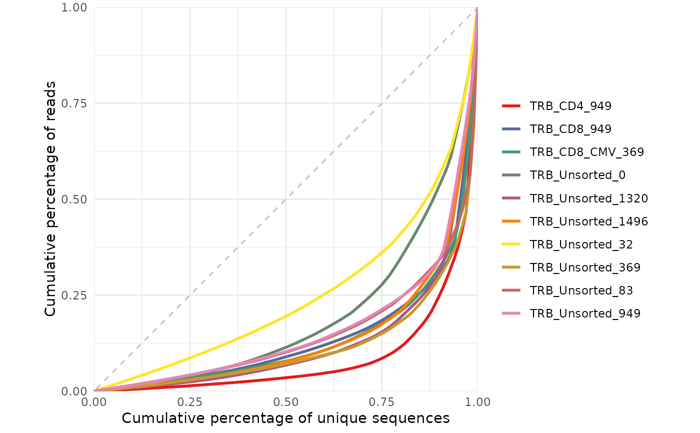

Plots a Lorenz curve derived from the frequency of the amino acid sequences.
Arguments
- repertoire_ids
A character vector of repertoire_id names in list.
- study_table
A tibble generated using the LymphoSeq2 function
readImmunoSeq()orproductiveSeq(). "duplicate_frequency" is a required column.
Details
The Gini coefficient is an alternative metric used to calculate repertoire diversity and is derived from the Lorenz curve. The Lorenz curve is drawn such that x-axis represents the cumulative percentage of unique sequences and the y-axis represents the cumulative percentage of reads. A line passing through the origin with a slope of 1 reflects equal frequencies of all sequences. The Gini coefficient is the ratio of the area between the line of equality and the observed Lorenz curve over the total area under the line of equality. The plot is made using the package ggplot2 and can be reformatted using ggplot2 functions. See examples below.
See also
An excellent resource for examples on how to reformat a ggplot can be found in the R Graphics Cookbook online (http://www.cookbook-r.com/Graphs/).
Examples
library(magrittr)
file_path <- system.file("extdata", "TCRB_sequencing", package = "LymphoSeq2")
# Plot Lorenz curve with raw data
study_table <- LymphoSeq2::readImmunoSeq(path = file_path, threads = 1) %>%
LymphoSeq2::topSeqs(top = 100)
repertoire_ids <- study_table %>%
dplyr::pull(repertoire_id) %>%
unique()
LymphoSeq2::lorenzCurve(repertoire_ids = repertoire_ids, study_table = study_table)

# Plot Lorenz curve with productive amino acid sequences
amino_table <- LymphoSeq2::productiveSeq(study_table = study_table,
aggregate = "junction_aa")
repertoire_ids <- amino_table %>%
dplyr::pull(repertoire_id) %>%
unique()
LymphoSeq2::lorenzCurve(repertoire_ids = repertoire_ids, study_table = amino_table)
# Change the legend labels, line colors, and add a title
repertoire_ids <- c("TRB_Unsorted_0", "TRB_Unsorted_32",
"TRB_Unsorted_83", "TRB_Unsorted_949", "TRB_Unsorted_1320")
lorenz_curve <- LymphoSeq2::lorenzCurve(repertoire_ids = repertoire_ids,
study_table = amino_table)
labels <- c("Day 0", "Day 32", "Day 83", "Day 949", "Day 1320")
colors <- c("navyblue", "red", "darkgreen", "orange", "purple",
"yellow", "pink", "lightgreen", "cyan", "maroon")
lorenz_curve +
ggplot2::scale_color_manual(name = "repertoire_ids",
breaks = repertoire_ids,
labels = labels, values = colors) +
ggplot2::ggtitle("Lorenz curve")
#> Scale for colour is already present.
#> Adding another scale for colour, which will replace the existing scale.